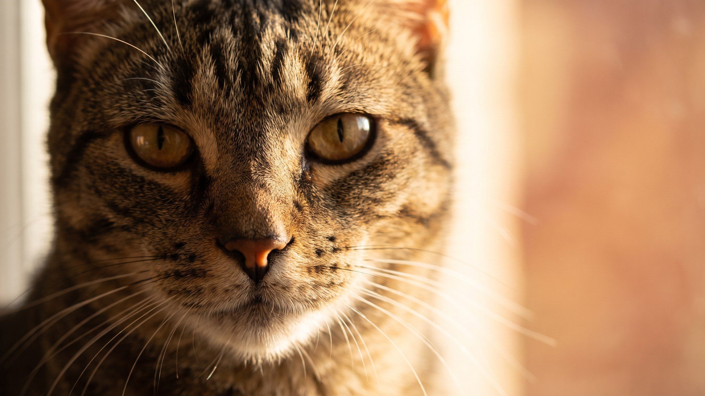

Здоровое ухо кошки чистить не нужно: она сама справляется. Но раз в пару недель стоит заглянуть, чтобы не пропустить начало проблемы. Вот как осмотреть ухо за минуту, по каким признакам понять, что пора вмешаться, и как почистить аккуратно и безопасно — без ватных палочек вглубь.
🐾 Заведите дневник ухода за кошкой
Вес, шерсть, обработки, прививки — всё в одном месте. А если что-то смущает, AI-ветеринар ответит круглосуточно и бесплатно.
Завести дневник → Завести в MAX →
У вас iPhone? AnimaLife есть в App Store
Возьмите кошку на колени при хорошем освещении. Аккуратно отогните ушную раковину и посмотрите на видимую часть уха.
Норма: кожа светло-розовая, почти без запаха, минимум светло-коричневого воска у входа, волоски сухие.
Признаки, что стоит почистить или проверить тщательнее:
Вам понадобятся: специальный лосьон для чистки ушей кошек (продаётся в зоомагазинах), ватные диски или ватные подушечки, пара минут и спокойная кошка.
Чего не делать: не используйте ватные палочки внутри слухового прохода. Они проталкивают налёт глубже и рискуют повредить нежную кожу. Только видимая часть, только диском или подушечкой.
Большинству домашних кошек достаточно осмотра раз в 1–2 недели и чистки раз в месяц или реже, по ситуации. Кошки с широкими открытыми ушами накапливают меньше воска. У пород с узким или складчатым ухом загрязнение накапливается быстрее.
Признаки, что всё в порядке после чистки:
Следующие признаки не для домашней чистки, а для визита к врачу:
Материал носит информационный характер и не заменяет очную консультацию ветеринара.
🐾 Чтобы уход не держать в голове
AnimaLife напомнит, когда стричь когти, вычёсывать, купать и обрабатывать от паразитов, и заведёт дневник по вашему питомцу. Бесплатно.
Настроить напоминания → Настроить в MAX →
У вас iPhone? AnimaLife есть в App Store
🐾 Понравился разбор?
Подпишитесь на канал — каждый день разбираем по одному тревожному симптому у кошек и собак: что в пределах нормы, а когда пора к врачу. Подпишитесь, чтобы не пропустить разбор, который может спасти здоровье вашего питомца.